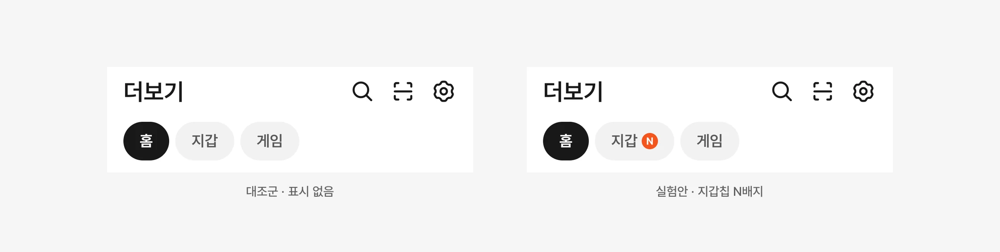

지갑칩 N배지 실험
더보기탭 지갑 칩에 새 소식을 알리는 N배지를 붙이고, 이를 하단 탭 알림과 연동할지 실험했습니다. 배지를 탭 알림과 잇는 안과 잇지 않는 안을 실험안으로 설계했고, 탭 알림과 연동한 안이 매출 가드레일을 지키며 지갑 칩 방문을 늘려 정식화됐습니다. 정식화 디자인에 이어 어떤 소식에 배지를 붙일지 기준을 정하는 논의까지 이어갔습니다.

출발점
지갑에 새 소식이 와도 칩에는 표시가 없었습니다
더보기탭 위쪽에는 홈, 지갑, 게임 칩이 있습니다. 지갑에 새 전자문서가 오거나 인증이 완료돼도 지갑 칩에는 아무 표시가 없어, 사용자가 확인할 일이 생겼는지 알 수 없었습니다.
탭 공통 정책에 따라 숫자 대신 N배지로 새 소식을 알리기로 하고, 이 배지를 하단 탭 알림과 연동할지를 실험으로 확인했습니다.

실험 설계
배지를 탭 알림과 잇는 안과 잇지 않는 안을 설계했습니다
칩에 붙는 배지만으로 충분한지, 하단 탭 알림까지 이어야 사용자가 알아차리는지를 나눠 볼 수 있도록 실험안을 둘로 설계했습니다. A안은 지갑 칩에 N배지가 켜지면 하단 더보기 탭에도 알림 점을 켜고, B안은 칩에만 배지를 붙였습니다.
버킷과 지표, 로그는 PM·데이터 분석가와 함께 정했습니다. 버킷별 2%로 2주 동안 진행했고, 성공 지표는 지갑 칩 방문, 가드레일은 선물하기 총 매출과 홈 광고 매출이었습니다. 배지 노출 조건을 만족한 사용자끼리 비교할 수 있도록 노출 대상 여부도 로그로 남겼습니다.

결과
탭 알림과 연동한 A안만 방문과 매출 기준을 함께 지켰습니다
A안은 지갑 칩 방문이 48.1% 늘었고, 선물하기 거래액 감소는 통계적으로 의미 있는 수준이 아니었습니다. B안은 방문 증가가 19.3%에 그쳤고, 홈 1인당 방문이 유의하게 줄었습니다.
A안의 광고 매출은 처음에 +15%로 집계됐지만, 한 사용자의 비정상적인 노출과 클릭이 섞여 있었습니다. 이를 제외하자 +3.7%로 내려왔고, 정식화는 이 값을 기준으로 판단했습니다.


정식화
A안의 정식화 디자인을 맡았습니다
4월 상위 의사결정으로 A안 정식화가 결정됐고, 정식화 과제의 디자인을 맡았습니다. 새 요소를 만들지 않고 디자인 시스템에 있는 칩 배지 요소를 그대로 써서 배지를 더했습니다.
4차 업데이트로 모든 사용자에게 적용됐습니다.

배지 규칙
배지가 꺼지는 조건을 사용자의 확인에 묶었습니다
N배지는 새 전자문서가 오거나 인증이 완료되면 켜지고, 사용자가 해당 문서나 인증서를 직접 열어야 꺼지도록 했습니다. 하단 탭의 알림 점은 서비스 알림이나 N배지 중 하나라도 남아 있으면 켜져 있고, 둘 다 해소돼야 꺼지도록 연동 규칙을 정했습니다.
이 규칙에서는 배지 대상이 늘어날수록 하단 탭의 알림 점이 켜져 있는 시간도 길어집니다. 그래서 정식화 이후에는 어떤 소식에 배지를 붙일지가 과제로 남았습니다.

운영 기준
어떤 소식에 배지를 붙일지 기준을 함께 정했습니다
정식화 이후 카드영수증이 배지 대상에 추가됐고, 다른 칩에서도 배지를 붙여 달라는 요청이 이어졌습니다. 배지 대상을 세 단계로 나누는 안을 PM과 함께 리뷰했고, 디자인 시스템팀과의 공통 정책 검토 회의에 참여했습니다.
프로모션에 쓰려던 칩 텍스트 라벨은 칩 구조에 맞지 않는다는 검토에 따라 뺐고, 칩 배지는 N 하나로 통일하되 기준에 맞는 경우만 보수적으로 허용하기로 했습니다. 7월에는 사용자가 열어 봐야 하는 전자문서만 배지를 남기고, 이미 끝난 일의 결과를 알려 주는 인증서와 카드영수증은 대상에서 뺐습니다.
게임 칩에 배지를 붙여 달라는 요청도 같은 기준으로 검토했습니다. 신규 게임 오픈 같은 프로모션 성격의 배지는 지갑 칩의 배지와 성격이 달라 보류됐습니다.

이후 해석
정식화 이후의 변화를 칩 영역 전체의 문제로 읽었습니다
정식화 한 달 뒤 더보기탭 PV에서 지갑 칩이 차지하는 비중은 4월 8.0%에서 5월 11.8%로 올랐습니다.
7월에 서브칩 클릭이 4주간의 성장 뒤 29.6% 줄었을 때는, 게임 칩 배너 효과가 사라진 시점과 인증서 배지를 뺀 시점이 겹친 결과로 나눠 봤습니다. 칩 종류가 늘어나는 상황이라, 칩을 더하기 전에 상단 칩 영역의 정보 위계를 먼저 정리해야 한다는 의제를 디자인 챕터 리뷰에 올렸습니다.
역할
리드한 것
- 실험안 설계 — N배지·탭 알림 연동 규칙
- A안 정식화 디자인
- 게임 칩 배지 요청의 기준 검토
- 정식화 이후 지표 해석과 칩 영역 정보 위계 의제
함께 한 것
- 버킷·지표·로그 — PM, 데이터 분석가
- 광고 영향·이상치 검증 — 광고 분석 조직
- 배지 운영 기준 — PM, 디자인 시스템팀
- 정식화·보류 결정 — PO